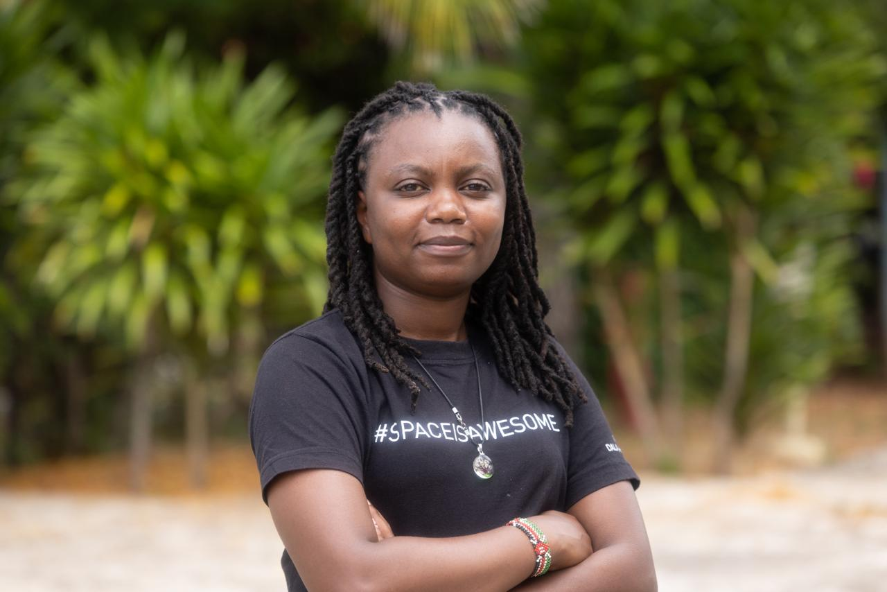

About
The record behind the maps.
Background, tools, working history, education and the certifications along the way — the full picture behind the selected work.

Specifications are where regulation, data and field reality meet.
I'm a Geospatial Data Engineer and Remote Sensing expert specialising in translating complex geospatial requirements into clear, actionable specifications and technical documentation. I hold a Master's in Space Entrepreneurship and a BSc in Geospatial Information Science, with deep domain expertise across GIS, Earth Observation and mapping standards.
My work centres on defining data quality protocols, identifying edge cases in spatial datasets and communicating technical concepts to stakeholders ranging from engineers to policymakers. I'm research-oriented, collaborative and detail-driven, with a track record of leading cross-functional geospatial projects aligned to regulatory and customer requirements.
Currently a Remote Sensing Officer at the Kenya Space Agency, working across compliance mapping, crop monitoring, flood risk and national space policy.
Skills
Layer panel
Toggle a layer off to see how the panel responds — same idea as switching layers in ArcGIS or QGIS.
- ArcGIS Pro
- ArcGIS Online
- QGIS
- ENVI
- Google Earth Engine
- Sentinel / Landsat
- SAR processing
- GeoJSON
- Shapefile
- GeoTIFF
- KML
- WMS/WFS
- Python
- SQL
- R
- JavaScript
- AWS (Certified Practitioner)
- Jupyter
- GitHub
- VS Code
- Reproducible workflows
- Pipeline validation
- Technical specification writing
- Mapping standards
- Data quality protocol design
- Edge case identification
- Requirement-to-spec translation
- Stakeholder communication
- Remote / international teams
- Project leadership
- Policy & strategy development
Experience
Field record
2022 — Present
Remote Sensing Officer
Kenya Space Agency
Leads geospatial specification and documentation work spanning compliance mapping, agricultural remote sensing, flood risk analysis, national space policy and EO capacity building, detailed under Selected Work.
2025 — Present
Space Professional
UNOOSA Space4Water Initiative
Working on Lake Ol'Bolossat monitoring focused on water quality and ecosystem health. The project is part of the UNOOSA Space4Water initiative, which aims at demonstrating earth observation applications for ecosystem and water resource management, detailed under Lake Ol' Bolossat Monitoring Initiative.
Oct 2024 — Jan 2025
Consultant — Community Manager
DevGlobal (Remote)
Managed structured digital content workflows for a global ICT4Agriculture community. Planned and facilitated virtual technical events, coordinating expert discussions across distributed international teams and producing structured post-event documentation.
2016 — 2018
GIS Intern
Azimath Limited
Validated and analysed field data under the KPLC Meter Box campaign, checking geospatial outputs for accuracy against specification benchmarks. Co-developed spatial plans for Uasin Gishu and Kisumu counties within defined mapping standards.
Education
Academic record
Postgraduate Diploma in GIS & Remote Sensing
Indian Institute of Remote Sensing (IIRS), ISRO
Dehradun, India
2026 — 2027
MSc Geoinformatics
Taita Taveta University, Kenya
2026 — 2027
Master's in Space Entrepreneurship
European Institute of Innovation for Sustainability, Italy
2024 — 2025
BSc Geospatial Information Science
Dedan Kimathi University of Technology, Kenya
2012 — 2016
Certifications & Training
Log
2026
Applied AI for Social Good — PoliSync
Climate & Carbon Data Intelligence — Vest Carbon
Generative AI Essentials for Software Developers — Moringa School
AI Skills 4 Women — Luxembourg, Founderz AI Business School
Machine Learning for Earth System Modelling — EMWF
AI Champion Training — Ministry of ICT Kenya
Assisted Natural Regeneration (ANR) Practitioner — Ecosystem Restoration Integrated Program (ERIP), ANR, Society for ECological Restoration(SER) & Learning for Nature - UNDP
2025
AI Ethics Summer School — Pan-Africa Centre for AI Ethics
ArcGIS Online, Pro & ENVI — RCMRD Kenya
Project Management — European Business Institute Luxembourg
Climate Peace and Security Course — AGNES
Green Finance Hub Fellowship — Green Finance Hub
STI mainstreaming in MDAs in rapidly changing times - NACOSTI
2024
AWS Cloud Practitioner Certified — Amazon Web Services
Agriculture Informatics using GIS & RS — IIRS, ISRO
Project Management — European Business Institute Luxembourg
Managing Successful Field Research — World Bank
2023
Software Engineering — Moringa School
AI & Space Summer Course — Amsterdam Law & Technology Institute
Reproducible Research Fundamentals — World Bank Development Impact
2022
Mapping Crops — ARSET (NASA)
Introduction to Sandbox — Digital Earth Africa
2020 — 2021
Python for Everyone — University of Michigan, Coursera
SQL Fundamentals — DataCamp
R Programming — Udemy
Recognition
Awards, service & memberships
Awards
- IAF Launchpad Mentee 2023 — International Astronautical Federation
- Space4Women Mentee 2023 — UNOOSA
- UN/Austria Symposium Presentation Acceptance & Travel Grant 2023 — UNOOSA
- UNOOSA Space4Water Presentation Acceptance & Travel Grant 2025 — UNOOSA
Volunteer Experience
- Jul 2023 — Dec 2024 Technical Assistant, African Space Leadership Institute — maintained a space policy inventory and provided technical support at international seminars and conferences.
- Feb — May 2024 ICT4Ag Ambassador, DevGlobal — led social media advocacy and authored the structured event report for the ICT4Ag Nairobi event.
Professional Memberships
- Institution of Surveyors of Kenya — Graduate Member, Geospatial Chapter
- International Society for Photogrammetry and Remote Sensing (ISPRS)
- African Women in GIS
- Coding Black Females
Want the full résumé or a chat?
Get in touch